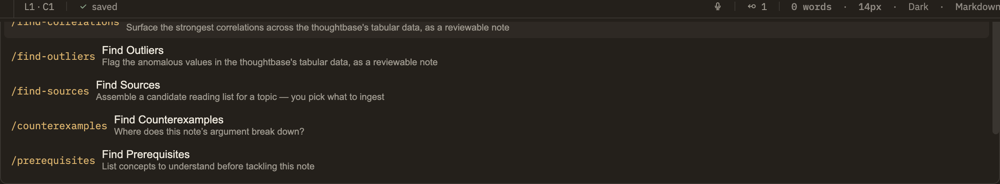

Docs/Thinking tools/What thinking tools are
What thinking tools are
Thinking tools are ready-made ways to put AI to work on your notes. Each one lives in the Learning, Research, or Analysis menu, and behind every entry is a skill: a saved instruction for the AI, together with a name and a home menu. Pick one and it runs against whatever you have open or selected.
A skill is a reusable instruction
Think of a skill as a small, purpose-built assistant. It knows one job — add a term to your glossary, steelman an argument, find tensions in a note — and it carries the instructions for doing that job well. When you choose a skill, Minerva hands the AI those instructions along with the right context (the note you're in, or the text you've selected) and starts a conversation.
Because each skill is a single, plain file, they're easy to browse, tweak, and share. Nothing about a skill is locked inside the app — you can write your own, adjust one you like, or turn one off entirely.
Built-in skills and your own
Skills come from two places:
Your skills add to the built-in set rather than replacing it. If you'd rather a built-in skill worked differently, turn it off in Settings → Skills and write your own version — starting from a copy of the one you liked is the easiest way to do this.
